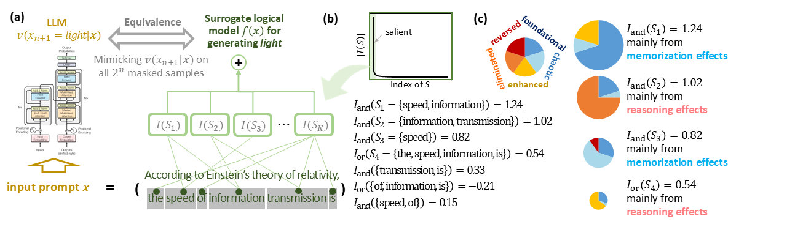
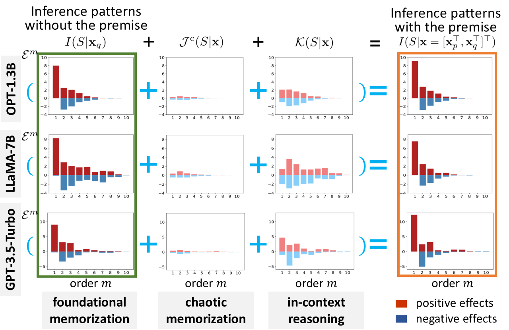
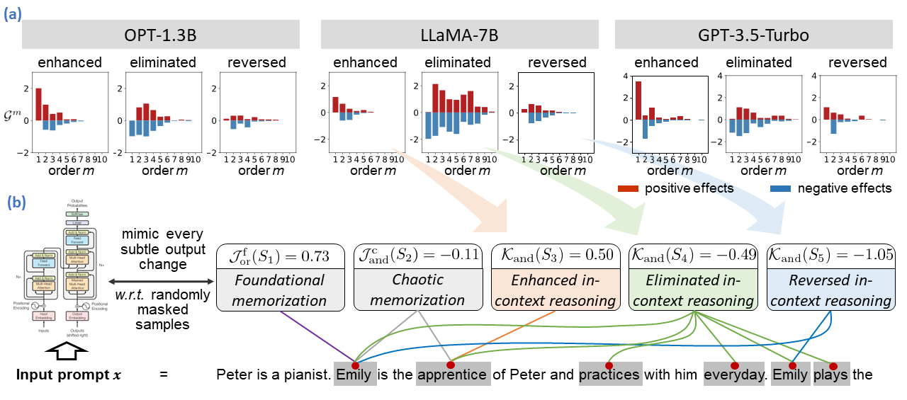
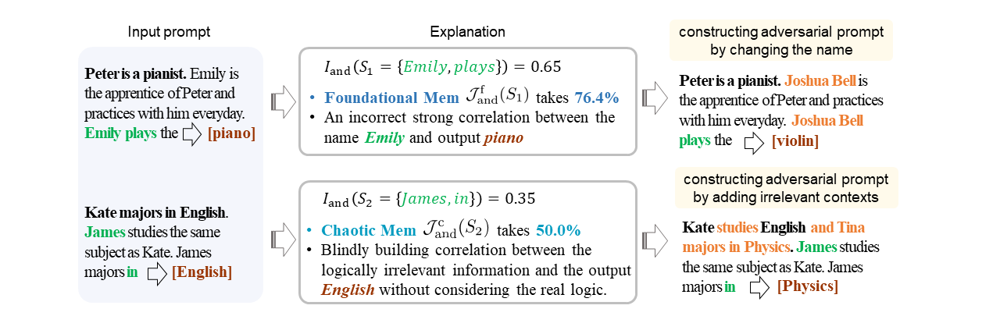

Abstract
It is a long-standing issue whether a large language model (LLM) conducts inference based on both memorized knowledge and reasoning logic. Most existing studies are limited to end-to-end black-box training and testing, which lacks a detailed understanding of LLMs’ inference logic. To this end, in this work,
（1） We propose a new axiomatic system to formulate and quantify the exact reasoning effects and memorization effects in mathematics used by an LLM. The axiomatic system enables a straightforward examination of detailed inference patterns encoded by LLMs.
（2） Based on the axiomatic system, the memorization effects can be further divided into foundational memorization effects and chaotic memorization effect, and the reasoning effects can be further categorized into enhanced reasoning patterns, eliminated reasoning patterns, and reversed reasoning patterns. This allows for a more granular analysis of how LLMs apply reasoning in conjunction with the memorized knowledge.

Figure 1: (a) The language generation logic of an LLM $v(x_(n+1)|\mathbf{x})$ is proven equivalent to a surrogate logic model $f(x)$ based on interactions on all $2^n$ randomly masked prompts. Each interaction represents an AND/OR relationship encoded by the LLM, which contributes $I(S)$ to the output score $v(x_(n+1)|\mathbf{x})$. (b) An LLM usually encodes a small number of salient interactions. We show strength of all interactions by sorting interaction strength in a descending order. (c) In this study, we decompose all interaction effects into foundational memorization effects, chaotic memorization effects, enhanced reasoning patterns, eliminated reasoning patterns and reversed reasoning patterns.
Preliminaries: interactions
Given an input prompt $x$, the confidence score $v(x_(n+1)|\mathbf{x})$ of an LLM can be disentangled into tens/hundreds of inference patterns. An inference pattern $I(S|\mathbf{x})$ is formulated as an interaction to present a non-linear relationship between different input tokens/words. As shown in Figure 2(a), two words {speed, information} form an interaction, making an interaction effect on the network’s output, and the interaction effect increases the confidence score $v(x_(n+1)|\mathbf{x})$ of predicting the next token $x_{n+1}=\text{light}$.
We have proven that an LLM can be considered to equivalently encode a set of AND interaction $\Omega_{\text{and}}$ and a set of OR interaction $\Omega_{\text{or}}$, and the confidence score $v(x_(n+1)|\mathbf{x})$ can be decomposed into the numerical effects of these interactions, i.e.,
$$
v(x_{n+1}|\mathbf{x}) = \sum\nolimits_{S\in \Omega_{\text{\rm and}}}I_{\text{\rm and}}(S|\mathbf{x}) + \sum\nolimits_{S\in \Omega_{\text{\rm or}}}I_{\text{\rm or}}(S|\mathbf{x}) +v(\mathbf{x}_\emptyset),
$$
Axiomatic system
Context-agnostic memorization vs. in-context reasoning.
Let us be given the prompt $\mathbf{x}=[\mathbf{x}_p^T,\mathbf{x}_q^T]^T$, which consists of a premise $\mathbf{x}_p=\{\text{ Caren works at school as a teacher.}\}$ and a question $\mathbf{x}_q=\{\text{ Emily is the colleague of Caren. Emily works as a }\}$. The question can only be answered by incorporating the in-context reasoning with the premise $\mathbf{x}_p$. Thus, the answer generated without the premise only uses the context-agnostic memorization, and the answer generated given both the premise and question is believed to use both memorization and in-context reasoning.
We propose an axiomatic system to precisely define and quantify the effects of context-agnostic memorization $(\mathcal{J}_{\text{and}}(S|\mathbf{{x}},\mathcal{J}_{\text{or}(S|\mathbf{x})}$ and in-context reasoning $(\mathcal{K}_{\text{and}}(S|\mathbf{{x}},\mathcal{K}_{\text{or}(S|\mathbf{x})}$ in the LLM’s inference logic, i.e.,
\begin{subequations}
\begin{gather}
I_{\text{\rm and}}(S|\mathbf{x}) \overset{\mathrm{decompose}}{=} \mathcal{J}_{\text{\rm and}}(S|\mathbf{x}) + \mathcal{K}_{\text{\rm and}}(S|\mathbf{x}), ~~~~~~ I_{\text{\rm or}}(S|\mathbf{x}) \overset{\mathrm{decompose}}{=} \mathcal{J}_{\text{\rm or}}(S|\mathbf{x}) + \mathcal{K}_{\text{\rm or}}(S|\mathbf{x}), \\
\Rightarrow v(x_{n+1}|\mathbf{x})
= \!\!\!\!\underbrace{\!\!\!\!\!\sum_{S\in \Omega_{\text{\rm and}}(\mathbf{x})}\!\!\!\!\!\mathcal{J}_{\text{\rm and}}(S|\mathbf{x})
+\!\!\!\!\!\!\!\sum_{S\in \Omega_{\text{\rm or}}(\mathbf{x})}\!\!\!\!\!\mathcal{J}_{\text{\rm or}}(S|\mathbf{x})}_\text{inference effects based on memorization}
+\!\!\!\! \underbrace{\!\!\!\!\!\sum_{S\in \Omega_{\text{\rm and}}(\mathbf{x})}\!\!\!\!\!\mathcal{K}_{\text{\rm and}}(S|\mathbf{x})
+ \!\!\!\!\!\!\sum_{S\in \Omega_{\text{\rm or}}(\mathbf{x})}\!\!\!\!\!\mathcal{K}_{\text{\rm or}}(S|\mathbf{x})} _\text{inference effects based on reasoning}+v(x_{n+1}|\mathbf{x}_\emptyset).
\end{gather}
\end{subequations}
Axiom 1(Condition dependence). In-context reasoning effects are supposed to exclusively affect the confidence score with the premise, i.e., if $\mathbf{x}=\mathbf{x}_q$, then $\mathcal{K}_{\text{\rm and}}(S|\mathbf{x}=\mathbf{x}_q)=0$ and $\mathcal{K}_{\text{\rm or}}(S|\mathbf{x}=\mathbf{x}_q)=0$.
Axiom 2(Variable independence).Given a set of logically equivalent prompts, $\mathbb{X} = \{\mathbf{x}^1, \mathbf{x}^2,\dots, \mathbf{x}^k\}$, let $v(x_{n+1}|\mathbb{X}) = \mathbb{E}_i[v(x_{n+1}|\mathbf{x}^i) ]$ represent the average confidence score. Then, the
change of confidence scores \emph{w.r.t.} $v(x_{n+1}|\mathbf{x})$ and $v(x_{n+1}|\mathbb{X})$ are supposed to be exclusively caused by chaotic memorization effects as follows,
$$
v(x_{n+1}|\mathbf{x}) - v(x_{n+1}|\mathbb{X})
=\sum\nolimits_{S\in \Omega_{\text{\rm and}}(\mathbf{x})}\mathcal{J}^{\text{\rm c}}_{\text{\rm and}}(S|\mathbf{x}) + \sum\nolimits_{S\in \Omega_{\text{\rm or}}(\mathbf{x})}\mathcal{J}^{\text{\rm c}}_{\text{\rm or}}(S|\mathbf{x}).
$$
All logically equivalent prompts in $\mathbb{X}$ have the same foundational memorization effects and the in-context reasoning effects, \emph{i.e.},
$\forall \mathbf{x}^i, \mathbf{x}^j$ in $\mathbb{X}, \mathcal{J}^{\text{\rm f}}_{\text{\rm and}}(S|\mathbf{x}^i) = \mathcal{J}^{\text{\rm f}}_{\text{\rm and}}(S|\mathbf{x}^j), \mathcal{K}_{\text{\rm and}}(S|\mathbf{x}^i) = \mathcal{K}_{\text{\rm and}}(S|\mathbf{x}^j)$ and $\mathcal{J}^{\text{\rm f}}_{\text{\rm or}}(S|\mathbf{x}^i) = \mathcal{J}^{\text{\rm f}}_{\text{\rm or}}(S|\mathbf{x}^j), \mathcal{K}_{\text{\rm or}}(S|\mathbf{x}^i) = \mathcal{K}_{\text{\rm or}}(S|\mathbf{x}^j)$.
Fine-grain analysis of memorization effects and in-context reasoning effects
According to the Axioms 1 and 2, we can quantify the memorization effect and the reasoning effect as follows,
\begin{subequations}
\begin{align}
\mathcal{J}^{\text{\rm f}}_{\text{\rm and}}(S|\mathbf{x}) &= I_{\text{\rm and}}(S|\mathbf{x}_q), &\quad \mathcal{J}^{\text{\rm f}}_{\text{\rm or}}(S|\mathbf{x}) &= I_{\text{\rm or}}(S|\mathbf{x}_q),\\
\mathcal{J}^{\text{\rm c}}_{\text{\rm and}}(S|\mathbf{x}) &= I_{\text{\rm and}}(S|\mathbf{x}) - I_{\text{\rm and}}(S|\mathbb{X}), &
\quad \mathcal{J}^{\text{\rm c}}_{\text{\rm or}}(S|\mathbf{x}) &= I_{\text{\rm or}}(S|\mathbf{x})-I_{\text{\rm or}}(S|\mathbb{X}), \\
\mathcal{K}_{\text{\rm and}}(S|\mathbf{x}) &= I_{\text{\rm and}}(S|\mathbb{X}) - I_{\text{\rm and}}(S|\mathbf{x}_q), &
\quad \mathcal{K}_{\text{\rm or}}(S|\mathbf{x}) &= I_{\text{\rm or}}(S|\mathbb{X}) - I_{\text{\rm or}}(S|\mathbf{x}_q),
\end{align}
\end{subequations}
The above decomposed effects still satisfy the sparsity property and the universal matching property, hence providing theoretical guarantee of the faithfulness. The axiomatic system was tested on three LLMs: OPT-1.3b, LLaMA-7B, and GPT-3.5-Turbo. Some key insights are as follow.
1.All tested LLM models encoded substantial in-context reasoning effects in inference and relatively weak chaotic memorization effects.
As shown in Table 1. The high ratio of reasoning effects and low ratio of chaotic memorization effects indicated the relatively good representation quality of the LLM.
|
OPT-1.3B |
LLaMA-7B |
GPT-3.5-Turbo |
$\rho_r$ |
39.12% |
42.82% |
45.24% |
$\rho_c$ |
7.37% |
7.57% |
7.81% |
Table 1: The ratio of in-context reasoning effects $\rho_r$ and the ratio of chaotic memorization effects $\rho_c$
2.Memorization effects contained interactions of varying orders, as shown in Figure
2.
Here, we use the order of the interaction to represent the number of input words in $S$, i.e., $order(S)=|S|$High-order interactions have lower generalization power than low-order interactions.

Figure 2: Distribution of the strength of foundational memorization interactions, chaotic memorization interactions and in-context reasoning interactions by order m.
3.In-context reasoning effects tend to eliminate high-order interactions and amplify low-order interactions in memorization effects.

Figure 3: (a) Distribution of the strength of three types of in-context reasoning effects over different orders $m$. (b) Visualization of some in-context reasoning effects and memorization effects on a single sample extracted from the LLaMA-7B model.
As shown in Figure 3. We can consider that the LLM uses the premise to filter out irrelevant memorization effects. Meanwhile, the reasoning effects also enhanced/reverse a small number of low-order interactions to refine the inference logic. Because high-order interactions have been found less generalizable than low-order interactions, the addition of the premise makes the inference much clearer and more faithful.
Practical value
1.Identifying seemingly correct yet actually incorrect inference logic.1.If we only evaluate the LLM based on its outputs, the superior performance of the LLM has led to a misconception that the LLM has already modeled reliable knowledge or conducted inference based on correct logic. However, our method first has enabled us to quantify the exact inference patterns of different types, and experiments have then shown that many inference patterns represent incorrect logic.
2.Enabling semantic debugging.2.Unlike traditional engineering explanation techniques, our method with theoretical guarantees (i.e., the universal-matching property) can guide the construction of adversarial prompts to attack LLMs.

Figure 4: Interactions illustrate problematic inference patterns used by the LLM. Then, we construct adversarial prompts based on the interaction.
For instance, as shown in Figure 4, the interaction between {Emily, plays} made significant contribution on the network output. However, its interaction effect primarily attributed to the foundational memorization effects (76%). Therefore, the LLM mistakenly encoded a strong prior that associated the output “piano” with interaction {Emily, plays}. We constructed an adversarial prompt by replacing “Emily” to “Joshua Bell” to attack the LLM. In the way, we observed the LLM outputting “violin” instead of “piano”.